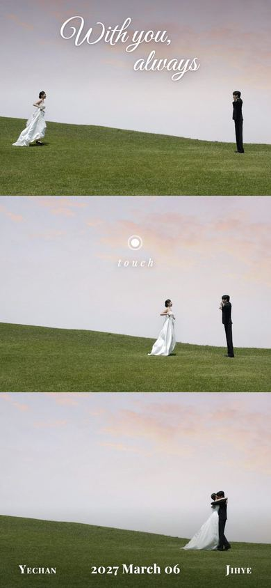
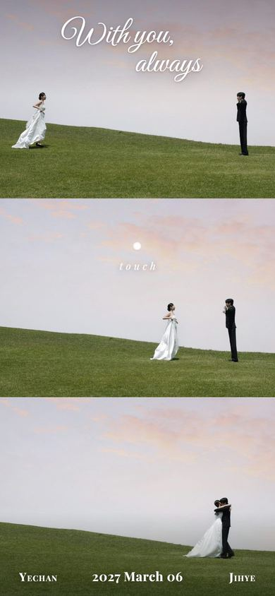
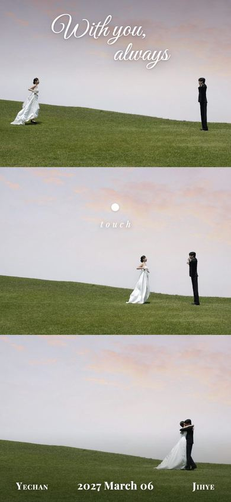

시안을 누르면 실제 첫 화면이 열려요. 화면을 터치하면 청첩장으로 넘어가는 모습까지 볼 수 있고, 뒤로 가기를 누르면 이 목록으로 돌아와요.

② 위에서부터 차례로맨 위 → 가운데 → 맨 아래 사진이 하나씩 떠오름눌러서 전체 화면으로 보기 → ③ 달려가는 방향으로 펼치기신부가 달리는 방향(왼쪽 → 오른쪽)으로 한 장씩 열림눌러서 전체 화면으로 보기 →
④ 초점이 맞춰지며 등장흐릿한 기억이 선명해지듯 한 장씩 나타나고, 이후 아주 천천히 다가감눌러서 전체 화면으로 보기 →
⑤ 차례로 불이 켜짐세 장이 어둡게 깔려 있다가 위에서부터 한 장씩 밝아짐 — 마지막 안는 장면에서 모두 환해짐눌러서 전체 화면으로 보기 →